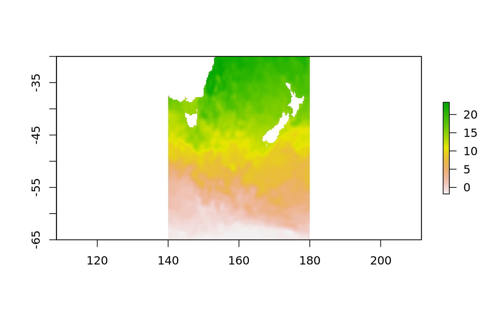
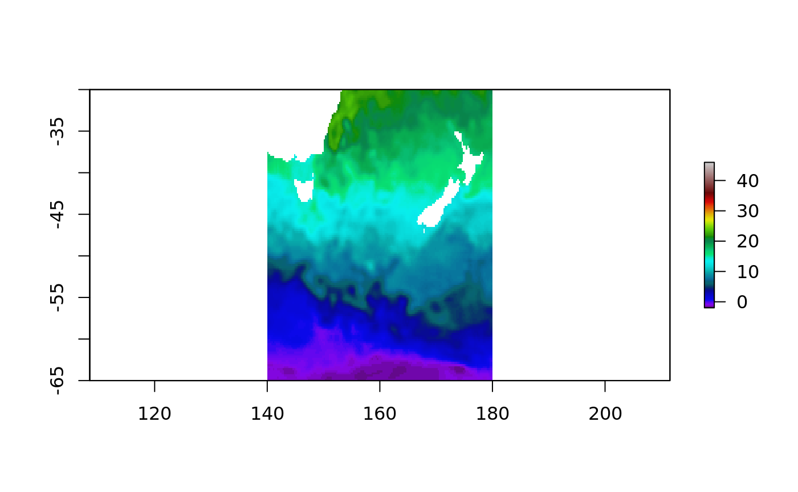
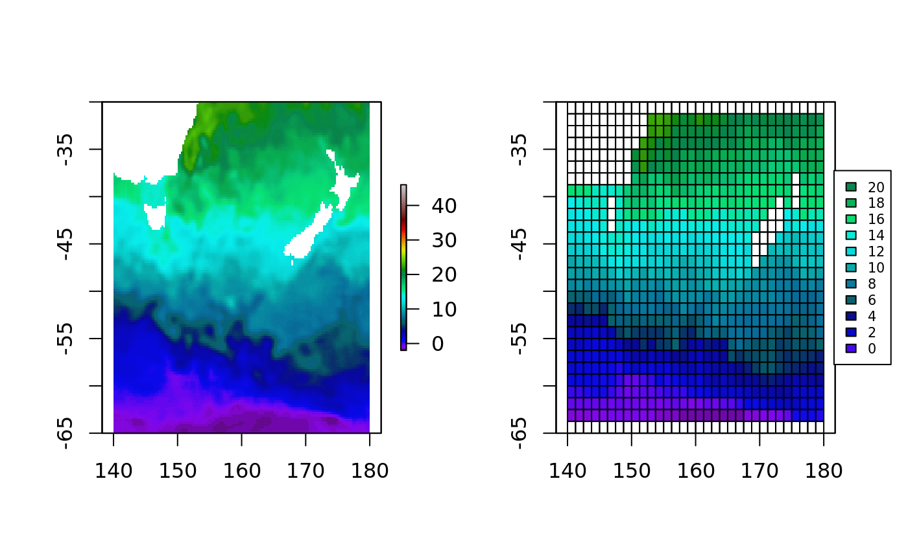
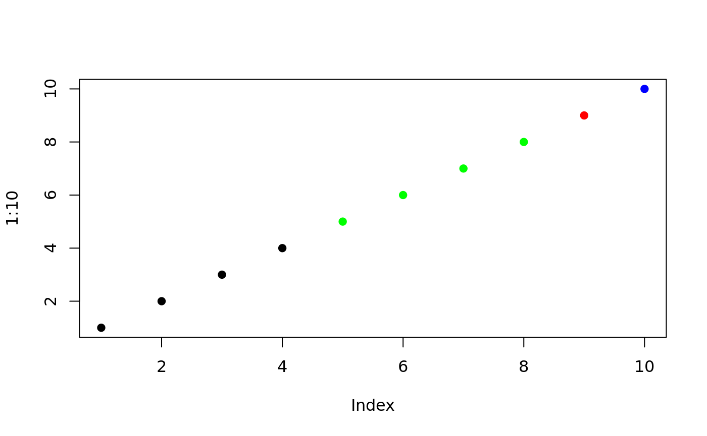
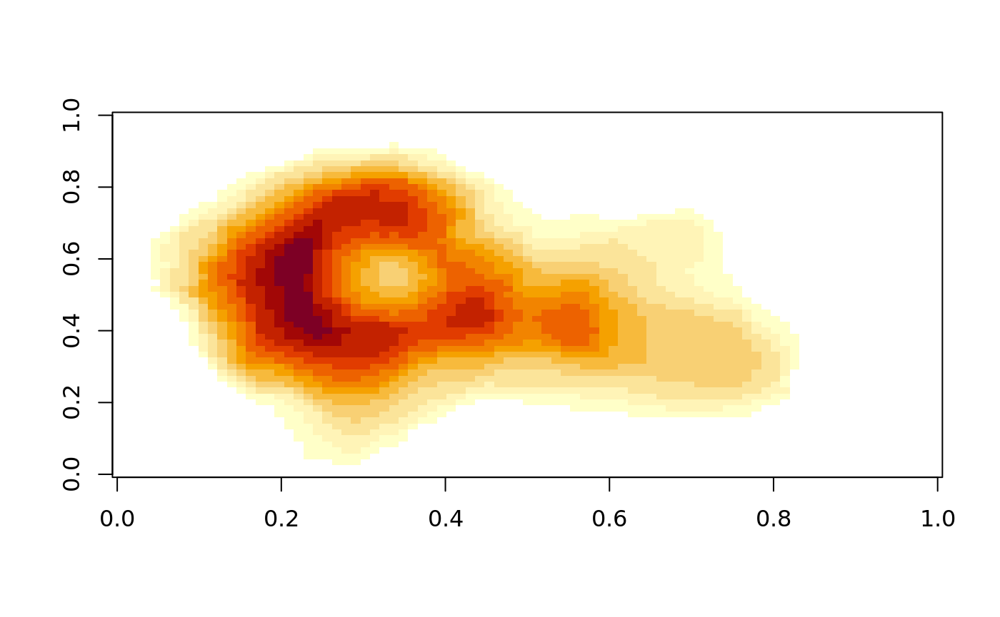
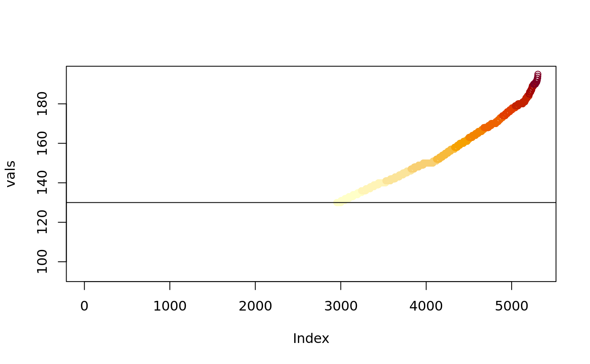
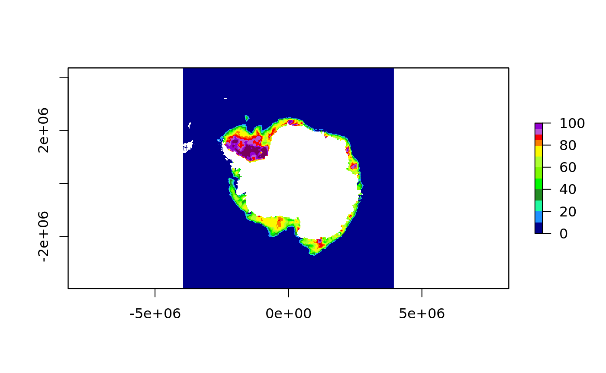
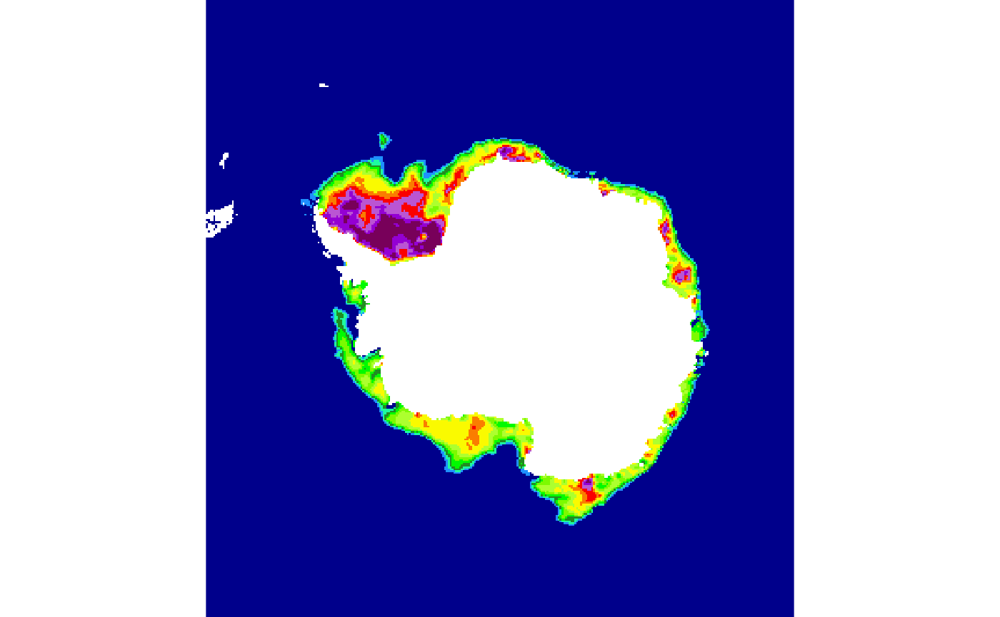
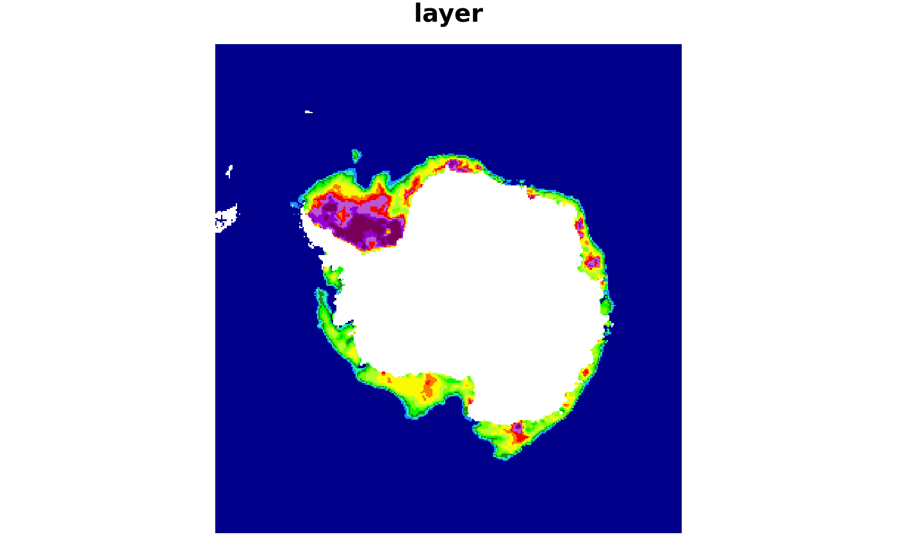

Colours can be frustrating to get just right in R. The palr package provides simple palette functions with standard colour schemes matched to real data values.
There are three main ways of working with palr palette functions.
pal(n) return n colours from the palettepal(data) return the right colour for values in data
pal(palette = TRUE) return the entire palette, with colours cols and intervals breaks
Here we show examples of the use of palr functions.
The oisst data set is a subset the NOAA 1/4° daily Optimum Interpolation Sea Surface Temperature (Reynolds, 2007) for the 11 June 2016 obtained from the National Oceanic and Atmospheric Administration (NOAA).

The default plot colours uses a setting provided by the raster package, but we have SST data in degrees Celsius so we can use the sstPal function to give specific colours for particular temperatures. The full range of the temperatures is shown on the plot legend, even though our data only has values in the range -1.8, 23.4.

Because we have the palette colours and data in an absolute palette we can also plot other data correctly to scale.
Create a aggregated version of the SST data set and turn it into polygons.
smsst <- focal(aggregate(oisst, fact = 5, fun = mean), matrix(1, 3), fun = median, na.rm = FALSE)
psst <- rasterToPolygons(smsst, na.rm = FALSE)
layout(matrix(1:2, ncol = 2))
plot(oisst, col = sstcols$col, zlim = range(sstcols$breaks))
plot(oisst, col = "transparent", legend = FALSE)## plot twice to get exact alignment
plot(psst, col = sst_pal(psst$layer), add = TRUE)
temps <- rev(c(0, 2, 4, 6, 8, 10, 12, 14, 16, 18, 20))
op <- par(xpd = NA); legend("right", legend = temps, fill = sst_pal(temps), inset = -0.2, cex = 0.65)
The function image_pal() can be used to bake a particular colour scheme into data. This is a bit like the colourvalues package function colour_values(), which takes raw values and maps them to a colour scale but is modelled on the image() function. The image function takes a set of colours and a set of breaks to define the colour scale, andimage_pal()` mirrors its defaults.
## [1] "#000000" "#000000" "#000000" "#000000" "#00FF00" "#00FF00" "#00FF00"
## [8] "#00FF00" "#FF0000" "#0000FF"
By using breaks we are able to control the actual scale of the colour mapping, we can provide different data values but still get the same colour for the same value input (if we set up the scale based on the original data we might have the wrong range).
There’s a simpler interface for using absolute colours than specifying every break, by using zlim. This value is ignored if breaks is set.

vals <- sort(unique(volcano))
cols <- image_pal(vals, zlim = c(130, max(volcano)))
plot(vals, col = cols); abline(h = 130)
There are analogous worker functions for packages raster and stars, so we can emulate a given plot effect and save it as a data object, this can be easily written out to image format such at GeoTIFF or PNG.
library(raster)
r <- raster(system.file("extdata", "nt_20140320_f17_v01_s.bin", package = "graticule", mustWork = TRUE) )
icp <- ice_pal(palette = TRUE)
## The AMSR colours
plot(r, col = icp$col, zlim = range(icp$breaks))

## class : RasterBrick
## dimensions : 332, 316, 104912, 3 (nrow, ncol, ncell, nlayers)
## resolution : 25000, 25000 (x, y)
## extent : -3950000, 3950000, -3950000, 4350000 (xmin, xmax, ymin, ymax)
## crs : +proj=stere +lat_0=-90 +lat_ts=-70 +lon_0=0 +k=1 +x_0=0 +y_0=0 +a=6378273 +b=6356889.449 +units=m +no_defs
## source : memory
## names : red, green, blue
## min values : 0, 0, 0
## max values : 255, 255, 255The same for stars.
## Loading required package: abind## Loading required package: sf## Linking to GEOS 3.7.1, GDAL 2.4.0, PROJ 5.2.0sm <- image_stars(stars::st_as_stars(r), col = icp$col, zlim = range(icp$breaks))
plot(sm, rgb = 1:3)
## stars object with 3 dimensions and 1 attribute
## attribute(s):
## layer
## Min. : 0.00
## 1st Qu.: 0.00
## Median : 34.00
## Mean : 96.64
## 3rd Qu.:139.00
## Max. :255.00
## dimension(s):
## from to offset delta refsys point values
## x 1 316 -3950000 25000 +proj=stere +lat_0=-90 +l... NA NULL
## y 1 332 4350000 -25000 +proj=stere +lat_0=-90 +l... NA NULL
## new_dim 1 3 NA NA NA NA NULL
##
## x [x]
## y [y]
## new_dimReynolds, R. W., T. M. Smith, C. Liu, D. B. Chelton, K. S. Casey, and M. G. Schlax, 2007: Daily high-resolution-blended analyses for sea surface temperature. Journal of Climate, 20, 5473–5496.
Full ncdump metadata from the data sets can be obtained with the following.
## [1] "eclipse.ncdc.noaa.gov/pub/OI-daily-v2/NetCDF/2016/AVHRR/avhrr-only-v2.20160611_preliminary.nc"##
## 4 variables (excluding dimension variables):
## short sst[lon,lat,zlev,time]
## long_name: Daily sea surface temperature
## units: degrees C
## _FillValue: -999
## add_offset: 0
## scale_factor: 0.00999999977648258
## valid_min: -300
## valid_max: 4500
## short anom[lon,lat,zlev,time]
## long_name: Daily sea surface temperature anomalies
## units: degrees C
## _FillValue: -999
## add_offset: 0
## scale_factor: 0.00999999977648258
## valid_min: -1200
## valid_max: 1200
## short err[lon,lat,zlev,time]
## long_name: Estimated error standard deviation of analysed_sst
## units: degrees C
## _FillValue: -999
## add_offset: 0
## scale_factor: 0.00999999977648258
## valid_min: 0
## valid_max: 1000
## short ice[lon,lat,zlev,time]
## long_name: Sea ice concentration
## units: percentage
## _FillValue: -999
## add_offset: 0
## scale_factor: 0.00999999977648258
## valid_min: 0
## valid_max: 100
##
## 4 dimensions:
## time Size:1
## long_name: Center time of the day
## units: days since 1978-01-01 00:00:00
## zlev Size:1
## long_name: Sea surface height
## units: meters
## actual_range: 0, 0
## lat Size:720
## long_name: Latitude
## units: degrees_north
## grids: Uniform grid from -89.875 to 89.875 by 0.25
## lon Size:1440
## long_name: Longitude
## units: degrees_east
## grids: Uniform grid from 0.125 to 359.875 by 0.25
##
## 7 global attributes:
## Conventions: CF-1.0
## title: Daily-OI-V2, Interim, Data (Ship, Buoy, AVHRR: NOAA19, METOP, NCEP-ice)
## History: Version 2.0
## creation_date: 2016-06-12 06:32
## Description: Reynolds, et al.(2007) Daily High-resolution Blended Analyses. Available at ftp://eclipse.ncdc.noaa.gov/pub/OI-daily/daily-sst.pdf Climatology is based on 1971-2000 OI.v2 SST, Satellite data: Navy NOAA19 METOP AVHRR, Ice data: NCEP ice
## Source: NOAA/National Climatic Data Center
## Contact: Dick Reynolds, email: Richard.W.Reynolds@noaa.gov & Chunying Liu, email: Chunying.liu@noaa.gov